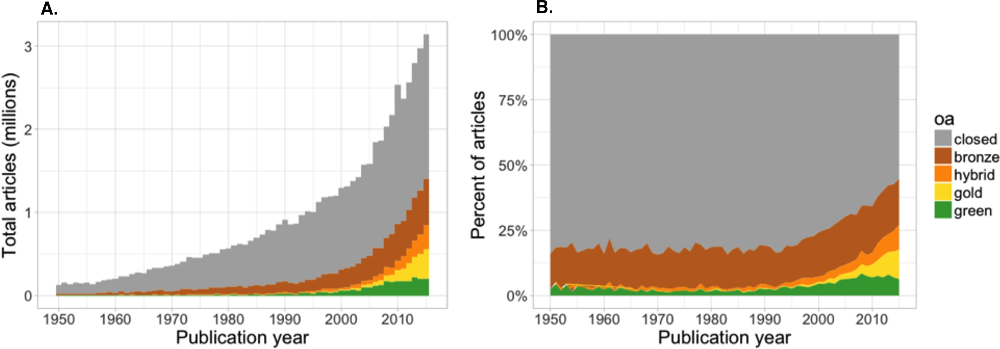

<!doctype html>
<html lang="en">
<head>
<meta charset="utf-8">
<!-- CUSTOMIZE THIS! -->
<title>Open Access</title>
<meta name="author" content="Christof Schöch">
<!-- END -->
<meta name="description" content="Slides">
<meta name="apple-mobile-web-app-capable" content="yes">
<meta name="apple-mobile-web-app-status-bar-style" content="black-translucent">
<meta name="viewport" content="width=device-width, initial-scale=1.0, maximum-scale=1.0, user-scalable=no, minimal-ui">
<link rel="stylesheet" href="css/reveal.css">
<link rel="stylesheet" href="css/theme/simple.css" id="theme">
<!-- Code syntax highlighting -->
<link rel="stylesheet" href="lib/css/zenburn.css">
<!-- Printing and PDF exports -->
<script>
var link = document.createElement( 'link' );
link.rel = 'stylesheet';
link.type = 'text/css';
link.href = window.location.search.match( /print-pdf/gi ) ? 'css/print/pdf.css' : 'css/print/paper.css';
document.getElementsByTagName( 'head' )[0].appendChild( link );
</script>
<!--[if lt IE 9]>
<script src="lib/js/html5shiv.js"></script>
<![endif]-->
</head>

<body>
<div class="reveal">
<div class="slides">
<section data-markdown="" data-separator="^\n-\n" data-separator-vertical="^\n--\n" data-separator-notes="^::" data-charset="utf-8" data-background-image="img/basics/uni-trier-icon.png" data-background-size="50px" data-background-position="top 10px right 10px">
<script type="text/template">

<!-- THIS IS WHERE THE CONTENT GOES! -->
<!-- Any section element inside of this container is displayed as a slide -->

##Was heißt und zu welchem Ende publiziert man im Open Access?
<hr/>
<br/>
Prof. Dr. Christof Schöch
<br/>
<br/>***Open Access Week 2020***
<br/>**Universitätsbibliothek Trier**
<br/>
<br/>Folien: https://christofs.github.io/publ/#/
<br/>
<br/>
<hr/>
</img>&nbsp;&nbsp;&nbsp;</img>


-
# Einleitung

--
## Ziele 
1. Das Verständnis für Open Access fördern <!-- .element: class="fragment" data-fragment-index="1" --> 
2. Aufzeigen, wie Open Access über kostenlosen Zugang zu PDF-Dateien hinausgeht <!-- .element: class="fragment" data-fragment-index="2" --> 
3. Dazu motivieren, im Open Access zu publizieren und Open Access zu fördern <!-- .element: class="fragment" data-fragment-index="3" --> 

--
## Überblick
1. [Was ist mit Open Access gemeint?](#/1)
1. [Warum überhaupt Open Access?](#/2)
1. [Finanzierungsmodelle](#/3)
1. [Offene Lizenzen](#/4)
1. [Open Access für die Maschinen](#/5)
1. [Open Access und Open Science](#/6)
1. [Abschluss](#/7)


-
# Was ist mit Open Access gemeint?

--
## Open Content Definition
Die folgenden Dinge sind erlaubt: 
* Retain - herunterladen und abspeichern <!-- .element: class="fragment" data-fragment-index="1" --> 
* Revise - bearbeiten oder übersetzen <!-- .element: class="fragment" data-fragment-index="2" --> 
* Remix - kombinieren, als Collage oder Korpus <!-- .element: class="fragment" data-fragment-index="3" --> 
* Reuse - eigene Fassung analysieren oder im Unterricht einsetzen <!-- .element: class="fragment" data-fragment-index="4" --> 
* Redistribute - eigene Fassung weitergeben oder veröffentlichen <!-- .element: class="fragment" data-fragment-index="5" --> 

<small>Quelle: http://opencontent.org/definition/</small>

::
* Wesentlich: Open Access ist viel mehr als "kostenfreier Zugang"!

--
## Welche Typen von Open Access gibt es?
* <span style="background-color:gold">Gold OA: die Zeitschrift oder der Verlag macht die Publikation frei verfügbar</span>
* <span style="background-color:lightgreen">Green OA: freie Verfügbarkeit durch Zweitveröffentlichung in einem Repository</span>
* <span style="background-color:#bf8970">Bronze: bei der Zeitschrift kostenlos verfügbar, aber ohne offene Lizenz</span>
* <span style="background-color:lightgrey">Hybrid: die Zeitschrift an sich ist geschlossen, aber einzelne Beiträge werden frei verfügbar gemacht</span>

::
- Gold: oft, aber nicht immer mit APC
- Green: preprint, postprint, etwas unübersichtlich
- Bronze: praktisch, aber nicht "echt" OA
- Hybrid: meist mit APC; "double dipping"?


--
## Wie verbreitet ist Open Access? 

<br/><br/><br/><small>
Quelle: Piwowar et al. 2018, https://doi.org/10.7717/peerj.4375/fig-2, [CC BY](Licence: [CC BY](https://creativecommons.org/licenses/by/4.0/))
</small>

::
- Prozentual: insgesamt 28%, zuletzt um 45% OA (Artikel mit DOI)
- In absoluten Zahlen: derzeit etwa 27 Millionen Artikel im OA
- In den Geisteswissenschaften dürte das niedriger sein (nicht erfasst)
- Monographien sind hier nicht erfasst


--
## Kontext Open Science


<small>
Image source: Rachael Gallager et al., 2019, URL: https://www.researchgate.net/publication/332352194, Licence: [CC BY-SA](https://creativecommons.org/licenses/by-sa/3.0/)
</small>

::
- Open Access ist nur eine Komponente im Kontext Open Science 
- Diese Komponenten ergänzen und verstärken sich gegenseitig 

-
# Warum überhaupt Open Access?

--
## Gute Gründe seit 2002
>An old tradition and a new technology have converged to make possible an unprecedented public good. The old tradition is the willingness of scientists and scholars to publish the fruits of their research in scholarly journals without payment, for the sake of inquiry and knowledge. The new technology is the internet. The public good they make possible is the world-wide electronic distribution of the peer-reviewed journal literature and <span style="background-color:yellow">completely free and unrestricted access</span> to it by all scientists, scholars, teachers, students, and other curious minds. Removing access barriers to this literature will accelerate research, enrich education, share the learning of the rich with the poor and the poor with the rich, make this literature as useful as it can be, and lay the foundation for uniting humanity in a common intellectual conversation and quest for knowledge. 

<small>
(Budapest Declaration on Open Access, 2002, <br/>https://www.budapestopenaccessinitiative.org/read)
</small>

--
## Gibt es einen "OA Citation Advantage"?

<br/><br/><br/><small>
Quelle: Piwowar et al. 2018, https://doi.org/10.7717/peerj.4375/fig-5, [CC BY](Licence: [CC BY](https://creativecommons.org/licenses/by/4.0/))
</small>

:: 
- Die Autoren haben einen deutlichen Vorteil festgestellt (aber nicht für Gold!)
- Es ist umstritten, wie dieser Befund zu erklären ist


--
## Perspektive der Leser:innen

--
## Perspektive der Autor:innen
* OA-Publikationen werden häufiger zitiert ("OA Citation Advantage")
* OA-Publikationen können einfacher in der Lehre eingesetzt werden
* OA-Publikationen können auch außerhalb der "bubbles" wahrgenommen werden
* OA ist zunehmend eine Anforderung der Forschungsförderer (DFG, ERC, etc.)

::
- Wiss. Autor:innen möchten doch vor allem wahrgenommen werden
- Der erste Effekt dürfte sich zunehmend verstärken (digital or invisible)
- Die rechtliche Situation zur Lehre ist viel zu kompliziert und beschränkend
- Außerhalb der bubbles: disziplinär gesehen; international gesehen;

--
## Perspektive der Verlage


-
# Finanzierungsmodelle

--
## Übersicht
* Article Processing Charges (Oxford UP)
* Freemium (OpenEdition Journals)
* Konsortiale Modelle (Open Library of Humanities)
* Nationallizenzen (DEAL)
* Subscribe / Purchase to Open (Nomos: RuZ; deGruyter)
* Institutionelle Förderung (ZfdG)
* Selbstausbeutung

-
# Offene Lizenzen

--
## Ziel von Lizenzen 

--
## Beispiel Creative Commons 

https://www.wb-web.de/_Resources/Persistent/b2ca4db51098d85aca431d538608ac0e0b14fa8c/DI_OER_CL_CCLizenzUeberblick_Final_150924.jpg

-
# Open Access für die Maschinen

--
## Are Publications Data?
* Bibliography as data: machine-readable form <!-- .element: class="fragment" data-fragment-index="1" --> 
* Marked-up structure: people can find introduction, method, conclusion sections automatically <!-- .element: class="fragment" data-fragment-index="2" --> 
* Marked-up entities: people can find out precisely what you are talking about <!-- .element: class="fragment" data-fragment-index="3" --> 
* Machine-readable statements: people can find out what your key points are <!-- .element: class="fragment" data-fragment-index="4" --> 

--
## Bibliographies as Data
* use machine-readable formats:<br/>BibTex, BibJSON <!-- .element: class="fragment" data-fragment-index="1" --> 
* include persistent identifiers:<br/>DOIs <!-- .element: class="fragment" data-fragment-index="2" --> 
* use tools that produce such formats:<br/>Zotero, Citavi, etc. <!-- .element: class="fragment" data-fragment-index="3" --> 
* publish the BibTex along with your paper<br/>(supplement) <!-- .element: class="fragment" data-fragment-index="4" --> 

--
## The BibTex format
Benureau, Fabien C. Y., and Nicolas P. Rougier. "Re-Run, Repeat, Reproduce, Reuse, Replicate: Transforming Code into Scientific Contributions." *Frontiers in Neuroinformatics* 11 (January 4, 2018). DOI: https://doi.org/10.3389/fninf.2017.00069.
<br/><br/>
<a href="data/bibtex.bib"></a>

--
## Marked-up structure
* Macrostructure <!-- .element: class="fragment" data-fragment-index="1" --> 
    * Metadata
    * main text
    * bibliography
* Microstructure <!-- .element: class="fragment" data-fragment-index="2" --> 
    * abstract
    * introduction
    * analysis
    * conclusions
    * etc.

--
## Journal article in XML-TEI
Alternative: JATS
<br/><a href="data/jtei-oc-ds-schoch-144-source.xml"></a>

--
## Marked-up Named Entities
* Types of entities <!-- .element: class="fragment" data-fragment-index="1" --> 
    * person names (writers, historical figures, etc.)
    * place names (cities, streets, countries)
    * organizations (publishers, companies)
    * research objects (novels, paintings, proteins, etc.)
* Persistent identifiers <!-- .element: class="fragment" data-fragment-index="2" --> 
    * VIAF, Wikidata, Getty TGN, etc.
    * More data: biographical data; geolocation; 

--
## Place names in an article
<a href="https://recogito.pelagios.org/document/kqhzjlljz7tsuc/map"></a>
<small>Source: A Sautkin, E Philippova, "Modernization reflected creatively: <br/>Central European capitals in the mirror of horror movies", *Creativity Studies*, 2018, [URL](https://journals.vgtu.lt/index.php/CS/article/download/5519/4787).</small>

--
## Linked Open Data
* Machine-readable information about the article <!-- .element: class="fragment" data-fragment-index="1" --> 
* Embedded into the article itself <!-- .element: class="fragment" data-fragment-index="2" --> 
* Based on metadata <!-- .element: class="fragment" data-fragment-index="3" --> 
    * publication date, publisher, etc.
    * places, people 
* Based on entities and semantic content <!-- .element: class="fragment" data-fragment-index="4" --> 
    * topics
    * key statements

--
## Linked Open Data


```
ISBN:9780141985411 HAS_TITLE "Weapons of Math Destruction"

ISBN:9780141985411 HAS_PUBLICATION_YEAR "2016"

ISBN:9780141985411 HAS_SUBJECT "Big Data"

ISBN:9780141985411 HAS_THESIS {"Big Data" CREATES "Inequality"}

ISBN:9780141985411 HAS_THESIS {"Big Data" ENDANGERS "Democracy"}
```

--
## Example Query in Wikidata
Written works with main subject Computer Science
<br/><a href="https://query.wikidata.org/#select%20%3Fauthor%20%3Fwork%20%3FauthorLabel%20%3FworkLabel%20%20where%20%7B%0A%20%20%3Fwork%20wdt%3AP31%20wd%3AQ47461344%3B%0A%20%20wdt%3AP921%20wd%3AQ21198%3B%0A%20%20wdt%3AP50%20%3Fauthor.%0A%20%20SERVICE%20wikibase%3Alabel%20%7B%20bd%3AserviceParam%20wikibase%3Alanguage%20%22en%22.%20%7D%0A%7D%0Alimit%2050"></a>

--
## What does all of this enable?
* Investigations into the state of the art in a field <!-- .element: class="fragment" data-fragment-index="1" --> 
* Analysis of citation networks  <!-- .element: class="fragment" data-fragment-index="2" --> 
* intelligent search over large collections of papers <!-- .element: class="fragment" data-fragment-index="3" --> 
* Visualizations like maps, timelines, etc. <!-- .element: class="fragment" data-fragment-index="4" --> 
* many more analyses... <!-- .element: class="fragment" data-fragment-index="5" --> 


-
# Abschluss

--
## Fazit 

* There is a lot more to Open Access than cost-free reading <!-- .element: class="fragment" data-fragment-index="1" --> 
* There is a lot more to publications than static PDF <!-- .element: class="fragment" data-fragment-index="2" --> 
* Most of the added features are not possible in print or PDF <!-- .element: class="fragment" data-fragment-index="3" --> 
* The technology is out there, but using it is still challenging <!-- .element: class="fragment" data-fragment-index="4" --> 
* Publishing text, data and code in open, standardized formats is the first step <!-- .element: class="fragment" data-fragment-index="5" --> 


--
## Weitere Informationen

* Informationsplattform Open Access: https://open-access.net/startseite
* Monographie von Peter Suber: *Open Access* (MIT, 2012): https://mitpress.mit.edu/books/open-access


--
## Referenzen
<small>
* Piwowar, Heather, Jason Priem, Vincent Larivière, Juan Pablo Alperin, Lisa Matthias, Bree Norlander, Ashley Farley, Jevin West, and Stefanie Haustein. “The State of OA: A Large-Scale Analysis of the Prevalence and Impact of Open Access Articles.” PeerJ 6 (February 13, 2018). https://doi.org/10.7717/peerj.4375.

</small>

--

-

<br/>
<br/>
### Danke für die Aufmerksamkeit!
<br/>
<br/>
<hr/>
<small>Christof Schöch, <a href="dh.uni-trier.de">DH Trier</a>, 2020, <a href="https://creativecommons.org/licenses/by/4.0/">CC-BY 4.0</a>
<br/>Bildquelle: Howard Miller, <a href="https://commons.wikimedia.org/wiki/File:We_Can_Do_It!.jpg">Wikimedia Commons</a> (public domain)</small>
<hr/>
<br/>
<br/>
</script>
</section>


<!-- DON'T TOUCH UNLESS YOU KNOW WHAT YOU'RE DOING :-) -->
</div>
<script src="lib/js/head.min.js"></script>
<script src="js/reveal.js"></script>
<script>
// Full list of configuration options available at:
// https://github.com/hakimel/reveal.js#configuration
Reveal.initialize({
    controls: true,
    progress: true,
    history: true,
    center: true,
    transition: 'slide', // none/fade/slide/convex/concave/zoom
    // Optional reveal.js plugins
    dependencies: [
        { src: 'lib/js/classList.js', condition: function() { return !document.body.classList; } },
        { src: 'plugin/markdown/marked.js', condition: function() { return !!document.querySelector( '[data-markdown]' ); } },
        { src: 'plugin/markdown/markdown.js', condition: function() { return !!document.querySelector( '[data-markdown]' ); } },
        { src: 'plugin/highlight/highlight.js', async: true, callback: function() { hljs.initHighlightingOnLoad(); } },
        { src: 'plugin/zoom-js/zoom.js', async: true },
        { src: 'plugin/notes/notes.js', async: true }
        ]
    });
</script>
</body>
</html>
